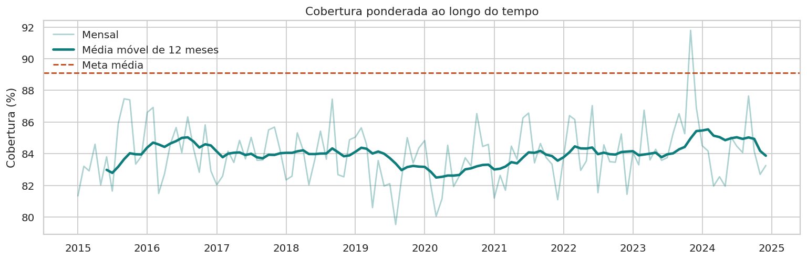
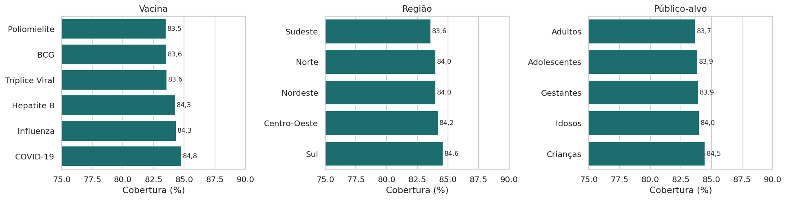
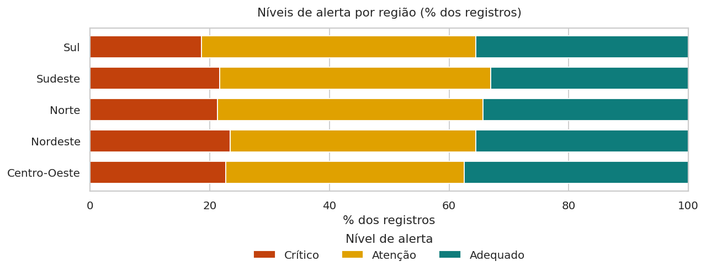
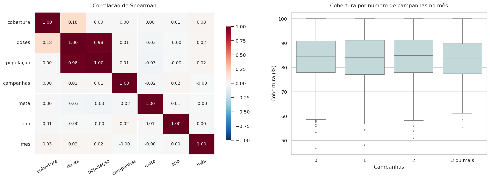

O problema
Cobertura vacinal é a parcela do público-alvo que recebeu a vacina. Cada registro da base tem uma meta, de 80% ou 95%. Abaixo dela, aumenta o risco de surtos de doenças evitáveis. Em vez de olhar só a média, o projeto mede quantos registros ficam abaixo da meta e procura onde esse problema se concentra.
A base de dados
Arquivo CSV simulado, um registro por mês × município × vacina, de janeiro de 2015 a dezembro de 2024. Não são números oficiais.
- 4.440 registros, 14 colunas, sem valores ausentes nem duplicatas
- 5 regiões, 20 UFs e 37 municípios
- 6 vacinas: BCG, COVID-19, Hepatite B, Influenza, Poliomielite e Tríplice Viral
- 5 públicos-alvo e metas de 80% ou 95%
Tratamento
- Textos padronizados e datas convertidas para
datetime - Cobertura limitada a 0–100%; 278 registros chegam ao teto de 100%
- Verificação: a cobertura informada bate com doses ÷ população
- Atributos novos:
gap_meta,atingiu_meta,periodoe grupos de campanhas
O que a análise mostra




Como o projeto foi construído
O dashboard tem quatro páginas, com filtros por período, região, UF, vacina e público-alvo que atualizam KPIs, gráficos e textos de interpretação.
| Página | Conteúdo |
|---|---|
| Visão geral | KPIs dinâmicos, série temporal, comparativos, distribuição, tabelas, upload de CSV e conclusão executiva |
| Mapa geográfico | Mapa interativo (Plotly) por município e ranking por UF |
| Correlações | Matriz de Pearson/Spearman, dispersão e efeito das campanhas |
| Banco de dados | Modelo relacional em SQLite com SQLAlchemy e consultas com junções |
Conclusão
A cobertura média de 84% está abaixo da meta na maioria dos registros (65,2%), e o problema aparece em todas as regiões, vacinas e públicos. Como as diferenças entre grupos são pequenas e a série não tem tendência, não há um recorte único onde concentrar esforços: vale olhar municípios e meses específicos. Nesta base, mais campanhas não vieram acompanhadas de mais cobertura, então o efeito de cada campanha deve ser medido com dados mais detalhados.
Limites: os dados são simulados, a cobertura é derivada de doses e população, e o nível de alerta é função direta da meta. Os resultados ilustram o método e não devem orientar decisões reais.